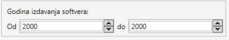

NAPOMENA:
Parametri pretrage nisu osetljivi na mala i velika slova.
Pretraga po oznaci
Svi softveri koji u svojoj oznaci sadrze uneseni pojam ce biti prikazani kao rezultat pretrage.
Neka postoje tri softvera sa oznakama - SMER, SMER2 i ABCDEFGHI.
Ako je parametar pretrage SME rezultat su prva dva softvera.
Ako je parametar pretrage ER2 rezultat je samo drugi softver.
Ako je parametar pretrage E rezultat su sva tri softvera.
Pretraga po nazivu
Svi softveri koji u svom nazivu sadrze uneseni pojam ce biti prikazani kao rezultat pretrage.
Neka postoje tri softvera sa oznakama - SMER, SMER2 i ABCDEFGHI.
Ako je parametar pretrage SME rezultat su prva dva softvera.
Ako je parametar pretrage ER2 rezultat je samo drugi softver.
Ako je parametar pretrage E rezultat su sva tri softvera.
Pretraga po godini izdavanja
Kao rezultat prikazuju se softveri cija se godina izdavanja softvera nalazi izmedju odabrane dve godine. Godine se biraju direktnim unos vrednosti u polja ili klikom na
strelice sa desne strane svakog polja gde se vrednosti povecavaju za jedan. U polju sa leve strane unosi se od koje godine izdavanja trazite softver, a u polju
sa desne strane unosi se do koje godine trazite softver. Primer izgleda polja je dat na slici 1.

Slika 1. Prikaz komponente za pretragu po datumu uvodjenja smera.
Pretraga po ceni
Kao rezultat prikazuju se softveri cija se cena nalazi izmedju odabrane dve cene. Cene se unose direktnim unos vrednosti u polja.
U polju sa leve strane unosi se minimalna cena softvera, a u polju sa desne strane unosi se maximalna cena softvera.
Pretraga po potrebnom operativnom sistemu
Kao rezultat prikazuju se softveri ciji je potreban operativni sistem jedan od izabranih vrednosti.
Vidite da mozete oznaciti vise operativnih sistema.
To znaci da, ako ste oznacili opcije Windows i Linux, kao rezultat pretrage Vam se prikazuju svi
softveri kod kojih je potreban Windows ILI softveri kod kojih je potreban Linux.